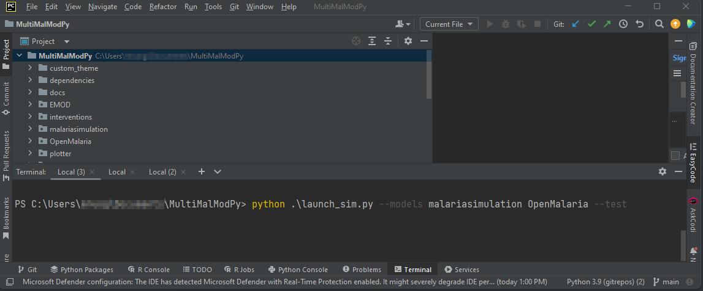
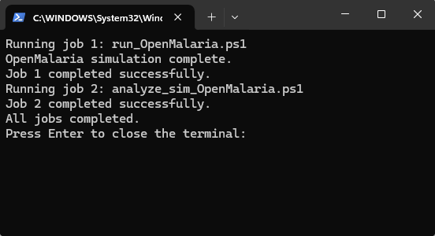
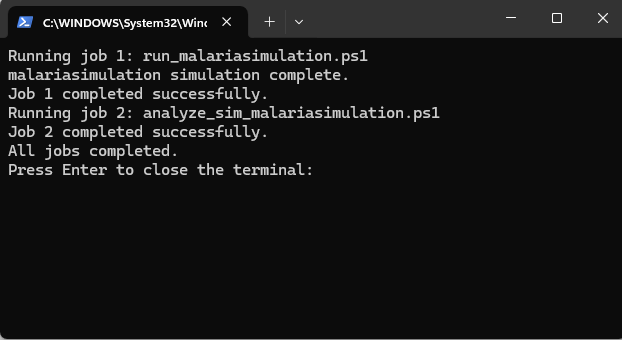

How to Launch Simulations By Platform¶
- ✅ You have installed all required software
- ✅ Your simulation is configured in
manifest.py - ✅ You want to run MultiMalModPy from a container without manual installation
-
❌ If not, revisit the
➡️ Installation guide
➡️ First-time configuration
Jump to
Quickly navigate to your preferred execution method:
🔹 Run simulation – using Python virtual environment (HPC or local)
🔹 Run simulation – using Singularity container (HPC)
🔹 Run simulation – using Docker (local)
🔹 Troubleshooting
Using Python virtual environment (HPC or local)¶
-
Navigate to the cloned MultiMalModPy repository and activate the virtual environment.
If you haven’t set up the virtual environment yet, follow the installation instructions here. -
Launch test simulations.
-
HPC:
python launch_sim.py --models EMOD malariasimulation OpenMalaria --test
- Windows:
- Open a command-line interface (CLI) terminal such as CMD, PyCharm terminal, or RStudio terminal.
Show image run_from_pycharm

Show image


You can choose to run all three models (EMOD, malariasimulation, and OpenMalaria) or specify only one or two by modifying the command accordingly.
- Monitor Simulation Progress
- on HPC:
- Check you simulations via
squeue -u <username>.
- Check you simulations via
- on Windows:
- EMOD: type in terminal
idmtools container status - malariasimulation and OpenMalaria: terminal windows per model appear.
- EMOD: type in terminal
View CMD terminals
OpenMalaria PSI

View image file

malariasimulation PSI

View image file

Using singularity container (HPC)¶
-
Navigate to the Repository
Open a terminal on your cluster and move into the MultiMalModPy repository using:cd <your_path>/MultiMalModPyReplacewith the actual path where the repository is located. -
Load singularity and ensure image file exists
module load singularityIf you haven’t downloaded the image file yet, follow the download it from here and save it under any directory on your HPC. -
You can look inside the container via:
singularity shell /path/to/emodpy4.1-OM46-R4.4.1.sif -
Launch the Simulation
To run the simulation, use the following command:cd dependencies dos2unix run_mmmpy_container.sh bash run_mmmpy_container.sh
You can choose to run all three models (EMOD, malariasimulation, and OpenMalaria) or specify only one or two by modifying the command accordingly.

- Monitor Simulation Progress
- Check simulations via
squeue -u <username>
- Check simulations via
Using Docker (Local)¶
- To run MultiMalModPy inside a Docker container, double-click on
dependencies/run_mmmpy_docker.bat. - Alternatively, you can follow manual steps as below (for developer, or troubleshooting).
Manual steps to run using docker
Ensure the Docker image is available on your computer
- If you haven’t installed it yet, refer to the installation page
Set up your directory path:
- In the example command below, replace PATH_TO_REPO with the directory path to your MultiMalModPy folder on your computer, excluding the MultiMalModPy directory itself.
- Example, if MultiMalModPy is in C:/Users/<USER>/Documents/MultiMalModPy, then type C:/Users/<USER>/Documents/
Modify manifest.py:
- Open the file and add the following line:
container_run = True
Run the Docker container:
- Use the following command, replacing PATH_TO_REPO with the actual path:
docker run -it -v <PATH_TO_REPO>:/mnt/c/projects mmmpy_local:rocky8 /bin/bash -c "source /opt/envs/mmmpy_local/bin/activate && cd /mnt/c/projects/MultiMalModPy && python launch_sim.py --models OpenMalaria --test"
What This Command Does:
- Mount the local directory in which MultiMalModPy is located to /mnt/c/projects in the Docker container.
- Activate the Python virtual environment inside the container.
- Navigate to the MultiMalModPy directory inside the container and run the simulation script (launch_sim.py) with the specified models and test flag.
Example Terminal Output:
```
PS C:\Users\<USER>\Documents\MultiMalModPy> docker run -it -v C:/Users/<USER>/Documents/:/mnt/c/projects mmmpy_local:rocky8 /bin/bash -c "source /opt/envs/mmmpy_local/bin/activate && cd /mnt/c/projects/MultiMalModPy && python launch_sim.py --models OpenMalaria --test"
No interventions specified
Warning: the popsize specified for malariasimulation (1000) is not in the interpolation dataset, since running simulation as test. Using interpolation data with lowest popsize (50000)
Warning: the popsize specified for OpenMalaria (1000) is not in the interpolation dataset, since running simulation as test. Using interpolation data with lowest popsize (50000)
Warning: A burn-in period of at least 80 years is recommended for OpenMalaria. Currently, a shorter burn-in of 10 years has been configured, which may lead to inaccurate results.
Warning: A population of at least 10000 is recommended for OpenMalaria. Current pop_size 1000 may lead to inaccurate results.
Warning: A burn-in period of at least 80 years is recommended for malariasimulation. Currently, a shorter burn-in of 10 years has been configured, which may lead to inaccurate results.
--------| Running sims_dynamic_perennial_10_28_39 for malariasimulation, OpenMalaria: 3 varying parameters: target_output_values, case_management, seasonality. Run mode: custom |--------
```
Postprocessing¶
HPC
Postprocessing runs automatically once the simulation job completes. No additional steps are needed to generate outputs or plots.
Windows (Local)
After the simulation finishes:
- Navigate to the
experiments/folder. - Double-click
plotter.batto generate the standard output plots.
📝 Note: Plotting does not run automatically on Windows unless you’re using the containerized setup. Run the plot script manually after each simulation.
Troubleshooting¶
If expected output files are missing, first check the log/ folder inside the experiment directory for error messages.
The .err and .out files can help determine whether the simulations completed successfully or if any issues occurred during execution.
To rerun specific steps, use the saved
.sh scripts (HPC) or .psi files (local) to execute each step individually.For debugging, you can also interactively use the framework from a Python console or Jupyter environment.